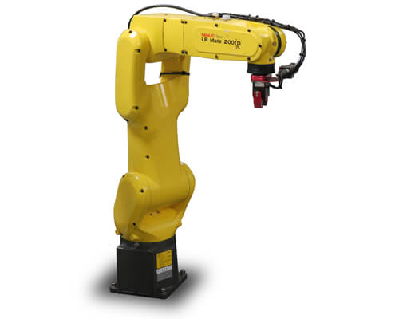

Professional Experience & Education
This page is a high-level overview of my professional experience, internships, and academic research. It highlights the roles and projects that shaped my engineering foundation, from hands-on manufacturing and design to graduate research and full-time product development work.

Mechanical Design Engineer
DEKA Research & Development, Manchester, NH | Feb 2025 – Present
- Design electromechanical and pneumatic fixtures for calibration and validation.
- Perform structural simulations to inform and improve designs.
- Create detailed technical drawings with GD&T.
- Redesigned an existing fixture by adding motorized actuation and a vision sensor to improve accuracy and repeatability.
- Developed Python-based control software and a custom GUI to support automated operation and testing.
- Collaborate with cross-functional teams to support testing and design iteration.

Mechanical Design Engineer
ASML (Full-time), Wilton, CT | June 2023 – Feb 2025
- Designed precise mechanical components for high-precision metrology machines, including flexures.
- Performed tolerance stacks, modal and structural analysis, and bolt calculations.
- Created assembly sequences and designs in NX adhering to GD&T and DFM standards.
- Led intern projects and collaborated on complex design reviews.

Graduate Research Assistant
Penn State (Graduate Research), University Park, PA | Aug 2021 – May 2023
- Designed the SIFM Laparoscopic Surgical System, a single-incision free-motion laparoscopic tool.
- Developed a laparoscopic haptic simulator using machine learning to calculate forces.
- Collaborated with medical professionals and students to develop prototypes and simulations in Python, MediaPipe, ANSYS, and MATLAB.
- Led a team of undergraduates and published papers on the SIFM system and laparoscopic trocar insertion simulation.
Mechanical Design Engineer Intern
DEKA Research & Development, Manchester, NH | May 2021 – Aug 2021
- Designed fluid path membranes and over 10 components for injection molding and 3D printing.
- Performed stress, thermal, and fluid analysis using FEA software.
- Tested and analyzed different material properties for medical devices.

Mechanical Engineer Intern
Bruce Diamond (Intern), Attleboro, MA | May 2020 – Jul 2020
- Programmed FANUC industrial robots and operated 5-axis CNC machines.
- Designed parts and created detailed SolidWorks drawings.
- Developed an operations manual and communicated manufacturing protocols.

Engineering & Design Learning Assistant
Penn State University, University Park, PA | Aug 2018 – Nov 2020
- Led SolidWorks and engineering design workshops.
- Mentored ~20 students per semester and assisted professors in project guidance.
- Motivated teams and acted as an additional educational resource.